Rosewater Sugar Cookies
~ raw, vegan, gluten-free ~
We all make food to eat. The tummy growls and we honor it with food. But we don’t just eat to fill that empty void… Food provides energy that is necessary for life. There are six classes of nutrients that we need to stay alive and well.
Proteins give your body amino acids — the building blocks that help your body’s cells do all of their everyday activities. Carbohydrates give you quick energy — they quickly go into your blood as glucose (blood sugar), which your body uses for fuel first, before turning the leftovers into fat.
Fats give your body the fatty acids it needs to grow and to produce new cells and hormones. Vitamins keep your bones strong, your vision clear and sharp, and your skin, nails, and hair healthy and glowing. Minerals are chemical elements that help regulate your body’s processes.
Water is necessary for life, which makes it vital for good health. Water makes up about 50% to 66% of your total body weight. It regulates your temperature, moves nutrients through your body, and gets rid of waste.
My goal is to incorporate all of these vital components when I create a recipe. But sometimes, I create food as an act of meditation. Meditation is a simple technique that can help you control stress, decrease anxiety, improve cardiovascular health, and achieve a greater capacity for relaxation. Who here doesn’t need that?
One morning I woke up and looked out the window. The fog was so thick that my eyes couldn’t find the horizon. The silhouettes of the trees were steadfast black against the fog that surrounded them. It was quite mystical. Everything seemed so still and quiet, a perfect day to “meditate”. Once in the living room I looked out at the orchard, the air was so thick and cold looking. Every good meditation session requires warmth, so soon after there was a roaring fire in the fireplace. I cleared the kitchen island, grabbed my cookie dough, brought out my tote of piping tips and supplies, sat on the stool, and just lost myself in creation.
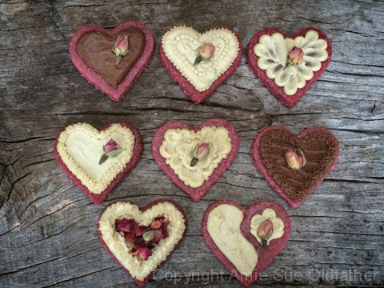
As I piped the frosting around on the heart-shaped cookies, I couldn’t help but smile… my heart was filled with love. I started thinking to myself about all the ways we share and experience love. I am mightily blessed with the most amazing husband, with family, and with friends. And, let me not forget, with each and every one of you.
Every day, I am touched by how many people from all over the world, reach out to me. Yes, I get tons of questions and get asked for advice on a daily basis… but the bottom line is… you all have become a support team for me, you cause me to grow, to stretch out beyond my comfort zones, you challenge me, friendships have and are being formed… the list goes on and on. This recipe comes to you with love.
Now, about these cookies. Everyone has a different idea of what makes the perfect sugar cookie. Some like them hard and crispy, others like them soft and chewy. I am in the soft and chewy group. :) These are moist on the inside and have a firm exterior (but not crunchy). How long you dehydrate them, will determine that. Bob said that they almost tasted buttery. In fact, if you wanted to replace the cashews with macadamia nuts, they would for sure elevate that buttery flavor. I have had macadamia nuts on my shopping list for at least 3 months now and every time I am at the grocery store, I reach for them but I can’t bring myself to pay $20 an lb. so opt for cashews.
When it comes to finishing, this frosting is great to work with for piping and spreading. You can color and flavor it any way you wish. For decoration, I used organic culinary grade rosebuds. I have posted a LOT of pictures on this post. I show some simple steps about how I piped some of them so you understand how to get the look that I did. If you wanted to, you could frost the cookie with a base layer and then chill. Once the frosting is very firm, you can smooth it to a streak-free base, sort of like fondant. Anyway, I hope that you give this recipe a try and enjoy your time of “mediation”.
Yields 24+ cookies
Cookie dough:
- 2 1/2 cups raw cashew flour
- 1 cup coconut flakes, shredded
- 1/2 tsp sea salt
- 2/3 cup maple syrup
- 1/2 cup beet juice
- 1/4 cup psyllium husks
- 1-2 tsp rose water (optional)
- 1/2 tsp vanilla extract
Frosting: yields 2 1/2 cups (divided)
Decorate:
- Chocolate hearts (use new mold from Michael’s)
Preparation:
Sugar cookies:
- In a food processor, fitted with the “S” blade, break down the cashews, and coconut into a flour – individually.
- Now combine the flours, coconut, salt, agave, beet juice, psyllium, rose water, and vanilla. Process until it starts sticking together and forms a ball.
- Wrap the dough in plastic wrap and place in the freezer for approx. 40 minutes or until chilled through.
- This step is very important. If you attempt to skip it you will find the dough too sticky to deal with.
- You could also place the dough in the fridge overnight if you wanted to do this in phases.
- Once chilled, line your surface with plastic wrap and place the chilled dough ball in the center.
- Cover with another piece of plastic, then start to roll the dough out to about 1/4″ thick.
- Remove the top plastic piece and using cookie cutters, cut out your shape(s) and transfer them to the mesh sheet that comes along with your dehydrator.
- Dry at 115 degrees in the dehydrator for approximately 10-16 hours or until desired dryness is reached.
- Frost, decorate, and eat!
Frosting:
- After soaking the cashews, drain and rinse them well. Set aside.
- In a high-speed blender combine in order; coconut milk, maple syrup, vanilla, salt, and cashews. By placing the liquids in first, it helps the blades spin more easily. Blend until creamy and don’t feel any grit in the frosting. Depending on the blender, this may take anywhere from 1-5 minutes.
- While the blender is running and a vortex is in motion, drizzle in the coconut oil. Make sure that it gets well incorporated.
- Now add the lecithin and process just until mixed in.
- Divide the frosting into two batches. Leave 1/2 as a white frosting and add 2 Tbsp of raw cacao to the other half, blend together, to make a milk chocolate frosting.
- Place the frosting in an airtight container and place in the fridge for 2-4 hours to firm.
- This will keep for 3-5 days.

French ~ L’amour (la-more)
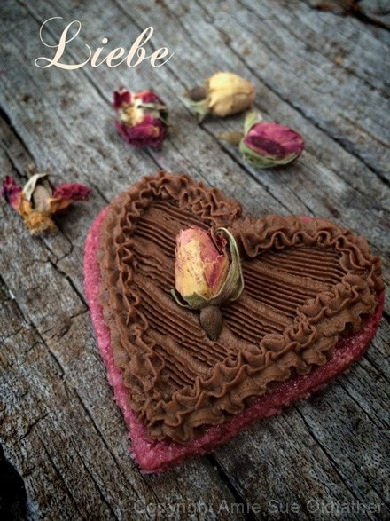
German ~ Liebe (lee-buh)
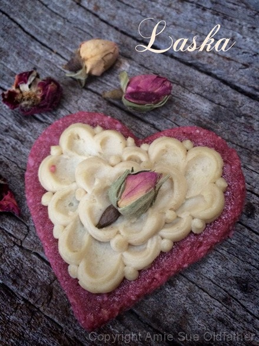
Slovak ~ Laska (lah-ska)
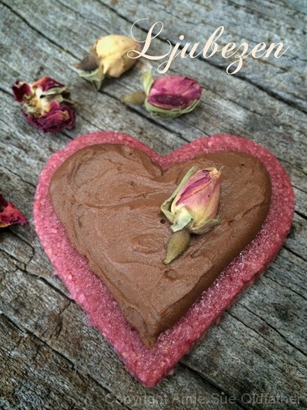
Slovenian ~ Ljubezen (loo-beh-zen)
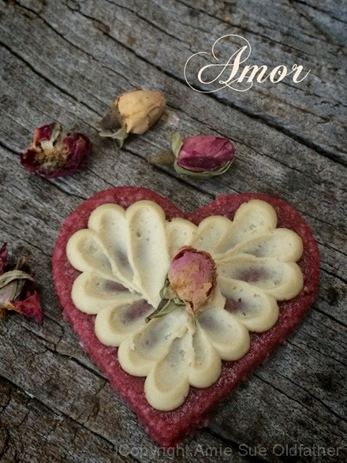
Galician ~ Amor (ah-more)
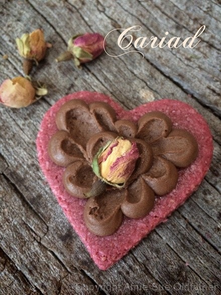
Welsh ~ Cariad (cah-ree-ah)
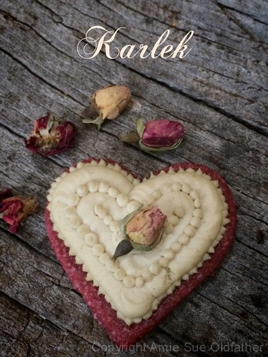
Swedish ~ Karlek (shar-lay-ek)
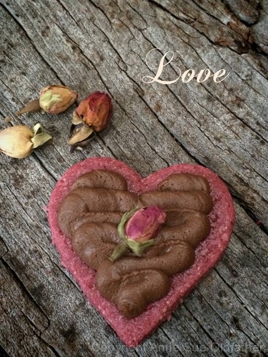
English ~ Love (luh-vuh)
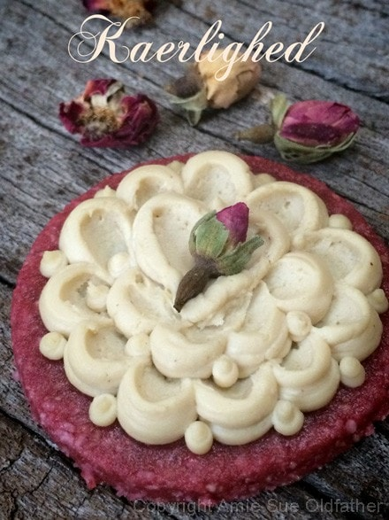
Danish ~ Kaerlighed (care-lah-did)
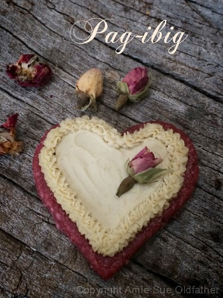
Filipino ~ Pag-ibig (pag-ee-big)
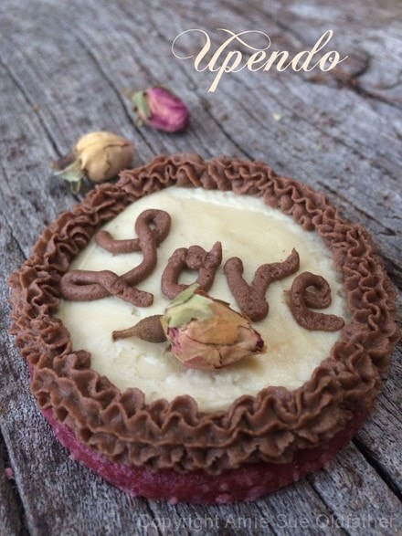
Swahili ~ Upendo (oo-pend-doh)
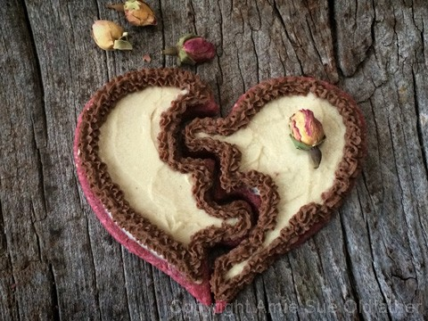
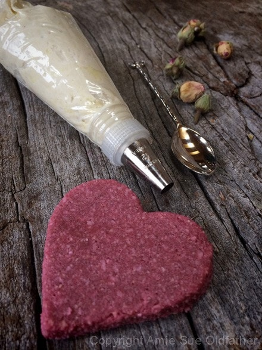
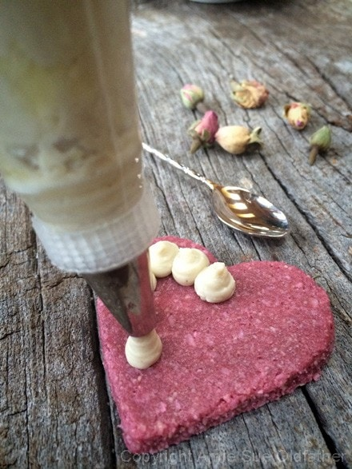
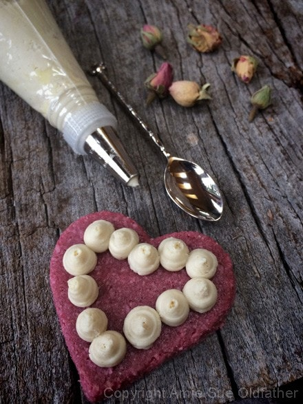
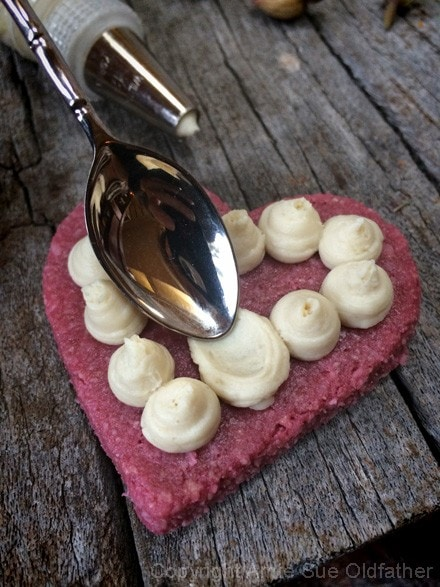
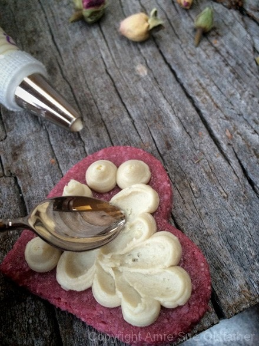
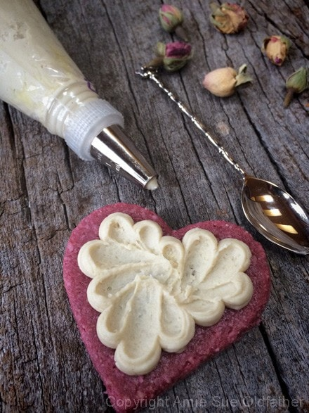
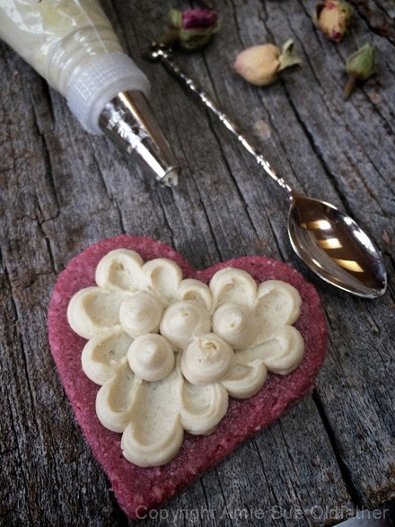
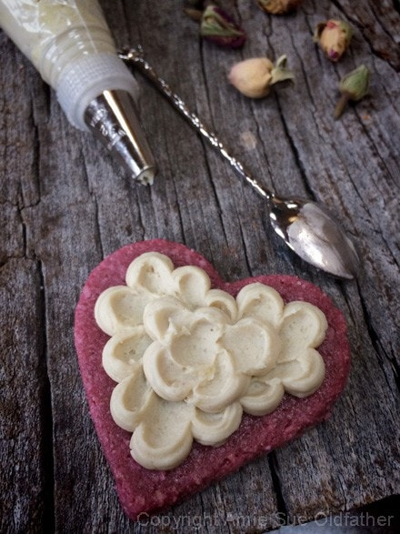
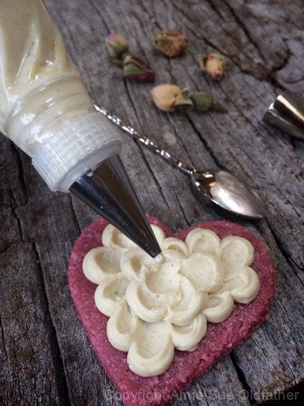
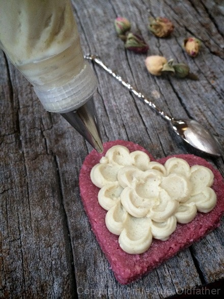
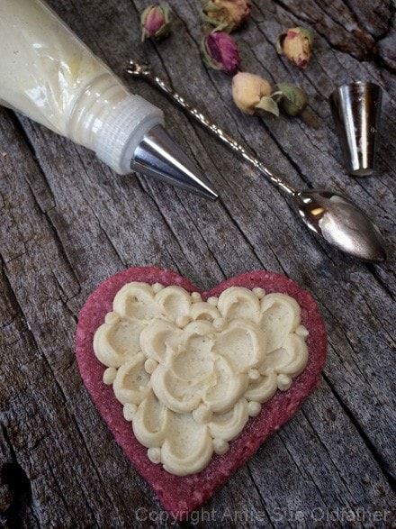
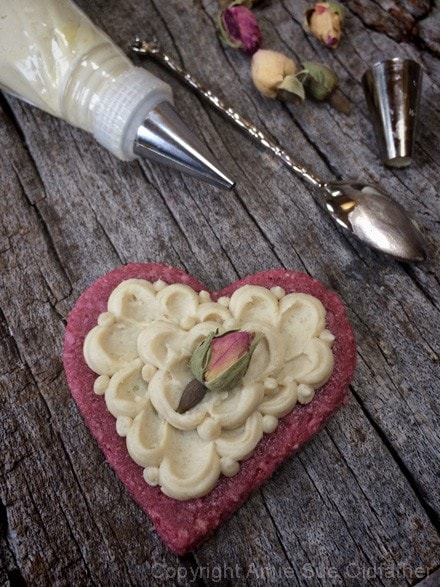
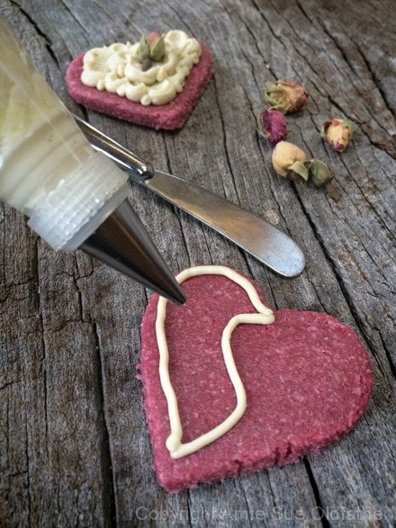
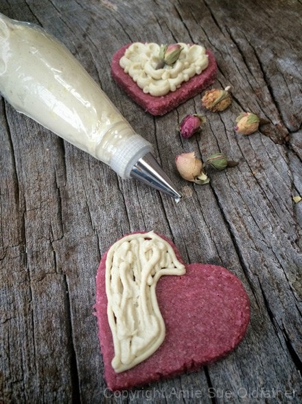
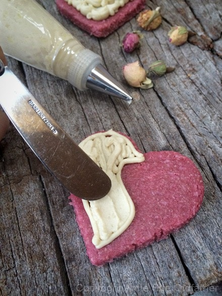
© AmieSue.com